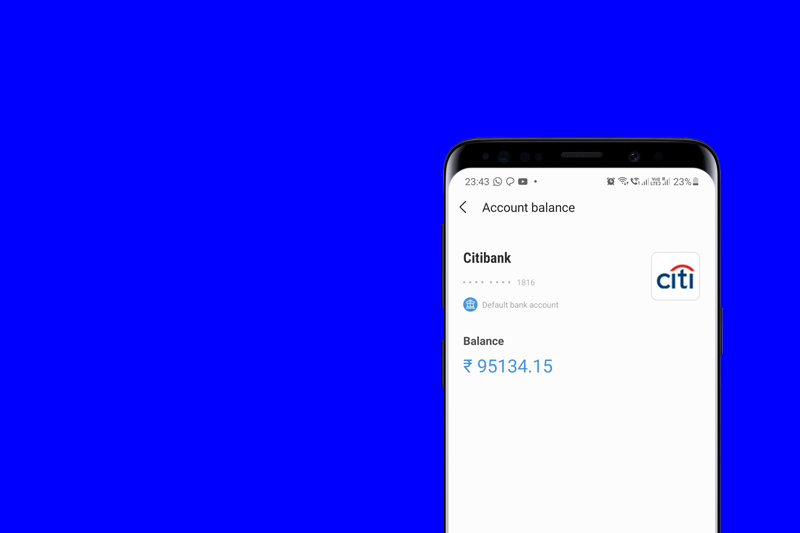

Duration
2 weeks
Nov 2019
About the project
Samsung Pay is a mobile payment service that lets user make card, wallet or UPI (Unified Payment Interface) payments using their Samsung Smartphones in India. Being a fintech app, it required to have more than just payments for user engagement and retention. This project mainly focuses on how we can engage users using their intrinsic motivation as incentive.

My Role
I teamed up with a newest member of the team. We collectively made decisions and steered the project direction.
I was involved in guiding the research process and performing extensive research, ideation, defining the flow of information, creating high fidelity wireframes, and usability testing.
Team Member
Saikat
Panja
Panja
Advisors
Abhishek S, Deepanwita G
The challenge
According to research, Millennials try to set goals for achieving something but somehow fail to save towards that goal for their daily splurges. This was an opportunity for us to help users achieve their saving goals and further look into the possibilities and the innovations around it.
The Outcome

Concept: Plan B
Savings using ‘check balance’ feature
Liquid cash in bank accounts is an important backup for crucial situations. Users subconsciously check balance to track their savings (liquid cash). Users have a minimum figure which they believe should be present in their account always. However, majority find it difficult to maintain this ideal/minimum account balance.
We can encourage users to develop a habit of savings using ‘check balance’ again and again.
The Process
We took a double diamond approach for our research and design outcome. The process steps are defined below.
Savings using ‘check balance’ feature

Research
We conducted extensive primary and secondary research to gain an in-depth understanding of the savings domain, understand user behavior, motivation and challenges around it and also identify different ways in which users track their savings.
Internal user survey | One-on-one interviews (10 participants) | Product benchmarking
Proposed design concept
After thorough research, analysis and ideation, we decided to leverage our existing feature of checking account balance to add more user value by promoting it as a savings instrument in alignment to user’s subconscious behavior.
DISCLAIMER : The designs were developed following the Samsung Design Guidelines. As this project was a proposal and was not commercialised due to NPCI guidelines, detailed design screen cannot be shown.
Learnings
As I reflect upon my experience and learnings from this project, I have learned about collaborating and guiding a new member. This project taught me, that the key to any successful design project is a deep understanding of the users and their biases. A lot of things go unnoticed if we do not dive deep into core user behaviors.